11 primals on a cow, 7 animals in all. Skin or pluck first: until then the body is one target.
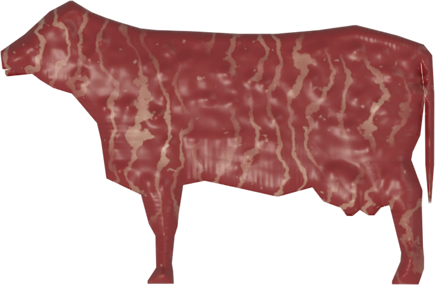
startendclean bandthe knife drifts
Drag from the green marker to the red one. Rushing makes the knife wander more.
Hold on past the red marker and you cut into the next primal.
Knife, saw or cleaver: the primal decides which.
Hook and bleed
Cows, pigs, sheep and deer hang on a butcher hook. Unbled caps grades at 75
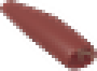
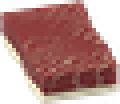
Knife
brisket, plate, flank, round, sirloin, tenderloin
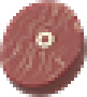
Saw
shanks, rib, short loin
Cleaver or hatchet
chuck
Cow tools shown·a worn or dull tool drifts more·chickens, turkeys and rabbits open from vanilla's Butcher option
Every cut comes out with a hidden grade, 0 to 100
Poor0 to 24
Standard25 to 44
Select45 to 64
Choice65 to 84
Prime85+
Butchering 2: you see the tierButchering 6: you see the number
0-100
Your trace starts it (clean share and how far misses strayed)
max 75
Not bled first
+5
Hung 12 hours on the hook (large animals)
max 25
Overcut by its neighbour (and less yield)
+5
Young animal
-40
at most for freshness: -1 an hour past 6 hours
-15
Road kill
-15
at most for a worn tool
meat kept from the primal
60% to 100%
the rest goes to scraps
food values
×0.8 to ×1.2
poor cuts also spoil sooner
Butchering XP
×0.5 to ×1.5
clean cuts level faster
220 kg
cow
66 kg
pig
27 kg
deer
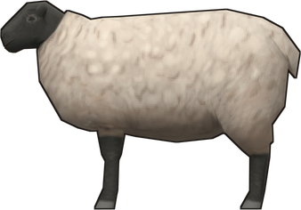
25 kg
sheep
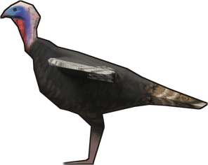
7 kg
turkey
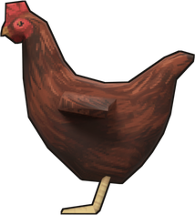
1.75 kg
chicken
1 kg
rabbit
Cuts from a full-size animal at grade 100, before the meat-ratio gene·offal, fat and scraps come on top
Big game comes home in quarters
1
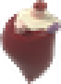
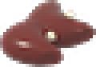
Field Dress
on the ground, with a knife: the offal comes out now and the carcass keeps twice as long
2
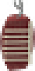
Quarter
with a saw: two forequarters and two hindquarters the hide comes off too
3
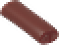
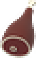
Open Butchery
right-click a quarter at home to cut its half of each primal on that end
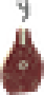
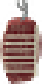
Loose
-2 grade an hour
by hand, in a bag or a vehicle, while you move, up to -10
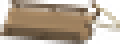
Butcher's Hand Sled
no bruising
drag it behind you, spoils at 75% speed
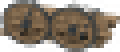
Game Cart
no bruising
a rack trailer any vehicle can tow, quarters hang on its hooks
Keep the edge, age the best cuts, mind the weather
Butcher's edge
fresh
after cuts
honed
Every cut dulls it a little, hard cuts more
Hone on a whetstone: Maintenance sets how sharp it comes back
Vanilla sharpness is untouched
Dry-age
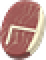
+1 grade a day
up to +8, losing 1.5% weight a day
A Choice or Prime cut kept in a fridge for a day or more, then trimmed. Frozen does not count.
Spoil speed
30 °C
×1.6
20 °C
×1.0
10 °C
×0.7
0 to 4 °C
×0.3
-2 °C
×0.05
of carcasses and quarters, by the temperature where they lie
A deer hung outside in winter keeps for days·with Dazed Climate, rooms have their own temperature
Nothing goes to waste, and the grade carries over
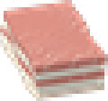
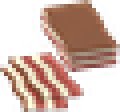
Cured bacon
pork belly and salt
Cured ham
pork ham and salt
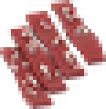
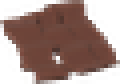
Jerky
a beef, mutton or venison cut and salt give 4
Mince and sausages
3 mince, cleaned intestines and salt give 9 sausages
Tallow
render suet in a cooking pot, strain 3 tallow
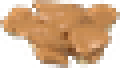
Lard
render pork fat, strain 3 lard and 2 cracklings
Candles and soap
tallow or lard makes 2 candles or 2 lye soap
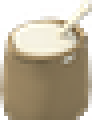
Bone meal
ground bones, then blood and bone fertilizer
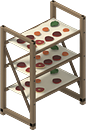
With Dazed Cooking: jerky comes out as Salted Meat Strips that dry into jerky on a drying rack (2 days), in a food dehydrator or in Dazed Plumbing's smoker. The grade carries over.
Five magazines in loot: four primal guides steady your knife on their animals, Curing and Smoking Quarterly teaches the cures